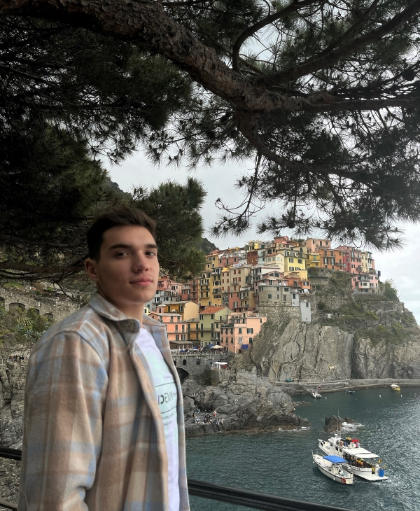

Hello,
I’m thrilled to have you here. As a junior developer eager to kickstart
my career, this portfolio showcases my journey and projects in web development.
I’m passionate about coding,
and I’m excited to bring my enthusiasm and skills to your team. Explore
the sections below to learn more about my experience, expertise,
and why I’m ready to contribute and grow in a dynamic role.
About
I’m Gabrijel, a caffeine-powered junior developer with a knack for turning lines of code into meaningful digital experiences. By day, I dive deep into the world of programming languages
and frameworks, fueled by an insatiable curiosity and the occasional pizza-fueled coding marathon.
By night, you’ll find me tinkering with new technologies, pondering over the next big project. I thrive on challenges and am always eager to learn, evolve,
and add a touch of creativity to everything I do.
Let’s connect, collaborate, and build something awesome together!
Why me?
I may be a junior developer with no traditional
university background, but my journey is a testament to the power of
determination and unconventional paths. Having completed an intensive
8-month Python course at Algebra University, I've laid a strong foundation
in programming. Currently mastering HTML, CSS, and diving deep into JavaScript,
I am driven by a relentless passion for learning and growth in web development.
Contact
Got a project in mind or want to chat? Feel free to reach out—I'd love to hear from you! Whether it's about potential opportunities, collaboration ideas,
or just a friendly hello, you can connect with me via:
📧 Email: g.gordic@outlook.com
📲 Phone: +385 98 554 721